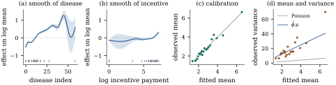

44.6 Generalized additive models
Everything so far assumed a normal response and an identity link. Lifting that costs one paragraph, because Part VIII did the work: a generalized linear model is fitted by repeated weighted least squares (Theorem 34.4.1), and repeated penalized weighted least squares is what this chapter has been doing throughout. Put the two together and the model class that carries the name appears.
44.6.1. The model and its fit
Let
with
(a) Minimizing Eq. 44.6.1 is the same as maximizing the penalized log-likelihood
(b) (Penalized IRLS.) With
that is, the penalized weighted least squares fit of the working response on the same design. At a fixed point the unpenalized columns satisfy
(c) (Degrees of freedom.) At convergence, with
(d) (Inference for a term.) Let
Proof.
(a) By Definition 34.5.1,
(b) Let
(c) At convergence the fitted linear predictor is
(d) Not proved here; see the notes.
Idea. Penalized IRLS is the whole algorithm: a generalized additive model is a generalized linear model whose weighted least squares step has acquired a penalty. Deviance, residuals, dispersion, offsets, the canonical-link orthogonality all survive, because the working problem is the same working problem.
What Hastie and Tibshirani (1990) called
local scoring differs only in solving
the inner penalized weighted least squares problem by
backfitting (Theorem 44.2.1)
rather than by one direct solve — essential when a
The inner loop needs one addition to the toolkit: the working weights and the working response. The first cell below repeats, unchanged, the term constructor of Section 44.2 and the solver of Section 44.5, so that this page runs on its own; the second is the new part.
import numpy as np
from scipy.interpolate import BSpline
def bspline_basis(x, n_basis=15, degree=3, lo=None, hi=None):
"""n_basis B-splines of the given degree on equally spaced knots covering the data."""
lo = x.min() if lo is None else lo
hi = x.max() if hi is None else hi
inner = np.linspace(lo, hi, n_basis - degree + 1)
h = inner[1] - inner[0]
knots = np.r_[lo - h * np.arange(degree, 0, -1), inner, hi + h * np.arange(1, degree + 1)]
return BSpline.design_matrix(np.clip(x, lo, hi), knots, degree, extrapolate=False).toarray()
def difference_penalty(d, order=2):
"""K = D'D for the order-th difference matrix D: the P-spline penalty."""
D = np.diff(np.eye(d), n=order, axis=0)
return D.T @ D
def spline_term(x, n_basis=15, order=2, weight=None):
"""A P-spline term: its design, its penalty, and the map from new covariate values to
design rows. The constraint sum_i f(x_i) = 0 is absorbed into the basis, and
weight = u turns the term into the varying-coefficient term f(x) u."""
lo, hi = x.min(), x.max()
B = bspline_basis(x, n_basis, lo=lo, hi=hi)
Q, _ = np.linalg.qr(B.sum(axis=0)[:, None], mode="complete")
U = Q[:, 1:] # a basis of {gamma : sum_i f(x_i) = 0}
Z = B if weight is None else B * np.asarray(weight)[:, None]
def design(xnew, wnew=None):
Bn = bspline_basis(np.asarray(xnew, float), n_basis, lo=lo, hi=hi)
return (Bn if wnew is None else Bn * np.asarray(wnew)[:, None]) @ U
return Z @ U, U.T @ difference_penalty(n_basis, order) @ U, design
def assemble(blocks, X, lambdas):
"""Stack the parametric columns and the terms into one design and one block penalty."""
Z = np.column_stack([X] + [Zj for Zj, _ in blocks])
K = np.zeros((Z.shape[1], Z.shape[1]))
start = X.shape[1]
for (_, Kj), lam in zip(blocks, lambdas):
d = Kj.shape[0]
K[start:start + d, start:start + d] = lam * Kj
start += d
return Z, K
class Fit:
"""One penalized solve: coefficients, components, operators and degrees of freedom."""
def __init__(self, y, blocks, X, lambdas, W=None, z=None, operators=True):
Z, K = assemble(blocks, X, lambdas)
w = np.ones(len(y)) if W is None else W
Zw = Z * w[:, None]
B = Z.T @ Zw # the weighted cross-product
A = B + K
Ainv = np.linalg.inv(A)
self.Z, self.K, self.A, self.w = Z, K, A, w
self.gamma = Ainv @ (Zw.T @ (y if z is None else z))
self.fitted = Z @ self.gamma
self.edf_total = np.trace(Ainv @ B) # tr(S) without forming S
self.parts, self.edf, self.comp = [], [], []
start = X.shape[1]
for Zj, _ in blocks:
sl = slice(start, start + Zj.shape[1])
self.parts.append(Zj @ self.gamma[sl])
self.edf.append(np.trace(Ainv[sl] @ B[:, sl]))
start += Zj.shape[1]
if operators: # the n x n smoothers
C = Ainv @ Zw.T
self.S = Z @ C
start = X.shape[1]
for Zj, _ in blocks:
self.comp.append(Zj @ C[start:start + Zj.shape[1]])
start += Zj.shape[1]
self.beta = self.gamma[:X.shape[1]]
def null_dim(K, tol=1e-9):
"""The dimension of the penalty null space: the part of a term that is never penalized."""
e = np.linalg.eigvalsh(K)
return int(np.sum(e < tol * max(e.max(), 1.0)))def penalized_irls(y, blocks, X, lambdas, family="poisson", offset=0.0, iters=60, tol=1e-10):
"""Penalized IRLS: at each step a penalized weighted least squares fit of the working
response on the same design -- Chapter 34's IRLS with the penalty added."""
eta = np.log(np.maximum(y, 0.5)) if family == "poisson" else np.zeros(len(y))
for _ in range(iters):
if family == "poisson":
mu = np.exp(eta + offset)
w = dmu = mu # w = (dmu/deta)^2 / V(mu) = mu
else: # binomial with the logit link
mu = 1 / (1 + np.exp(-(eta + offset)))
w = dmu = mu * (1 - mu)
w = np.maximum(w, 1e-10)
z = eta + (y - mu) / dmu # the working response
fit = Fit(z, blocks, X, lambdas, W=w, z=z, operators=False)
done = np.max(np.abs(fit.fitted - eta)) < tol
eta = fit.fitted
if done:
break
fit.eta, fit.mu = eta, mu
return fit
def pearson_dispersion(y, fit, family="poisson"):
"""The Pearson estimate of the dispersion, with the effective degrees of freedom."""
v = fit.mu if family == "poisson" else fit.mu * (1 - fit.mu)
return np.sum((y - fit.mu) ** 2 / v) / (len(y) - fit.edf_total)
def poisson_deviance(y, mu):
"""The Poisson deviance of Chapter 34, with the 0 log 0 convention."""
t = np.where(y > 0, y * np.log(np.maximum(y, 1e-300) / mu), 0.0)
return 2 * np.sum(t - (y - mu))
def irls_reml(y, blocks, X, family="poisson", offset=0.0, outer=40, tol=1e-7,
dispersion=False):
"""Penalized IRLS with the smoothing parameters updated at every step: each working
problem gets the update of reml_lambdas, with the dispersion of Chapter 38 in place of
the nominal phi = 1 when dispersion is True."""
lam = np.ones(len(blocks))
for _ in range(outer):
fit = penalized_irls(y, blocks, X, lam, family=family, offset=offset)
phi = pearson_dispersion(y, fit, family) if dispersion else 1.0
new = lam.copy()
start = X.shape[1]
for j, (_, Kj) in enumerate(blocks):
d = Kj.shape[0]
g = fit.gamma[start:start + d]
tau2 = max(g @ Kj @ g, 1e-12) / max(fit.edf[j] - null_dim(Kj), 1e-6)
new[j] = min(max(phi / tau2, 1e-8), 1e10)
start += d
done = np.max(np.abs(np.log(new) - np.log(lam))) < tol
lam = new
if done:
break
fit = penalized_irls(y, blocks, X, lam, family=family, offset=offset)
fit.phi = pearson_dispersion(y, fit, family)
return lam, fit44.6.2. Choosing the smoothing parameters, and the dispersion
Eq. 44.5.4 was
derived for a normal response. The standard device, the
performance iteration of Gu (1992), applies it
to the working problem: at each penalized IRLS step
treat irls_reml does above. Recomputing
One choice there matters more than it looks. For a
Poisson or binomial response the nominal dispersion is
Example (Physician visits in a health insurance experiment)
fitted a Poisson log-linear model to the RAND Health
Insurance Experiment,
The disease term takes
The deviance falls from
The same panel is a warning. Above a disease index of

import numpy as np
import statsmodels.api as sm
data = sm.datasets.randhie.load_pandas().data # 20190 person-years, public domain
y = data["mdvis"].to_numpy(float) # outpatient physician visits in the year
disea = data["disea"].to_numpy(float) # a general disease index
lpi = data["lpi"].to_numpy(float) # log participation incentive payment
linear = ["lncoins", "idp", "physlm", "hlthg", "hlthf", "hlthp"]
X = np.column_stack([np.ones(len(y))] + [data[v].to_numpy(float) for v in linear])
Z1, K1, design1 = spline_term(disea, n_basis=12) # the two smooth terms
Z2, K2, design2 = spline_term(lpi, n_basis=12)
lambdas, fit = irls_reml(y, [(Z1, K1), (Z2, K2)], X, family="poisson", dispersion=True)
print("smoothing parameters", lambdas.round(2))
print(f"edf: disease index {fit.edf[0]:.2f}, incentive payment {fit.edf[1]:.2f}, "
f"model {fit.edf_total:.2f}")
print(f"dispersion {fit.phi:.2f}")
for name, b in zip(linear, fit.beta[1:]):
print(f" {name:8s} {b:8.4f} rate ratio {np.exp(b):.4f}")X_linear = np.column_stack([X, disea, lpi]) # the same regressors, both smooths linear
fit_linear = penalized_irls(y, [], X_linear, [], family="poisson")
D_gam = poisson_deviance(y, fit.mu)
D_linear = poisson_deviance(y, fit_linear.mu)
ddf = fit.edf_total - fit_linear.edf_total
F = (D_linear - D_gam) / ddf / fit.phi # a quasi-F, not an exact null statistic
print(f"deviance {D_linear:.0f} (linear) against {D_gam:.0f} (smooth)")
print(f"quasi-F {F:.2f} on {ddf:.2f} and {len(y) - fit.edf_total:.0f} degrees of freedom")44.6.3. What the p-values are worth
Warning (Inference after choosing the
smoothing parameters). The statistic in Theorem 44.6.1(d)
and the quasi-
- The reference distribution is approximate even when everything else is right. How good the approximation of Theorem 44.6.1(d) is depends on the term; Wood (2013) reports both the cases where it works and the cases where it fails, and simulation is the only way to know which one is at hand.
- A term that the smoothing-parameter selection has
pushed to the boundary
- A
Use these numbers to rank terms and to screen, nothing more. For a claim that matters, hold out data, or put the whole fitting procedure — smoothing-parameter selection included — inside the resampling loop of Chapter 23.
44.6.4. Checking the fit
The model is still a generalized linear model at
heart, so the diagnostics of Chapter
39 transfer unchanged; panels (c) and (d) of Figure
44.6.1 show two of them, binned by fitted mean.
Panel (c) is the binned analogue of the exact
recalibration identity Proposition 35.4.2,
which a penalized fit no longer satisfies exactly, since
the score identity of Theorem 44.6.1(b)
holds only for the unpenalized columns. Panel (d) puts
the observed variance in the same bins against the
fitted mean: far above the Poisson line
A smoothing parameter shrinks a term towards its
penalty null space but not through it: however large
44.6.5. Where this leaves the book
Part IX set out to drop the linear predictor, and it has. A modern additive fit is a linear model in a basis, with a quadratic penalty per term, a variance ratio per penalty and a mixed model underneath; the response may come from any exponential dispersion family, and the terms may be curves, surfaces, maps or clusters.
One assumption has survived it all. Every model in
this book, from Chapter
5 to this page, has modelled the mean of
the response and treated the rest of its distribution as
a nuisance —
44.6.6. Exercises
A. Check your understanding
In Theorem 44.6.1(a)
the dispersion cancels from the iteration but not from
the smoothing-parameter update. Explain the difference,
and say what happens to the fitted curves if
Solution. Given
B. Practice
Local scoring. Show that replacing the
direct solve in Eq. 44.6.2 by one
or more backfitting cycles on the weighted penalized
normal equations gives the local scoring algorithm of
Hastie and Tibshirani, and that Theorem 44.2.1
applies to the inner loop with
Solution. Eq. 44.6.2 is
Shrinking a whole term away. Let
Solution. Split
C. Going deeper
In Example (Physician visits, with two smooth terms)
the curve above a disease index of